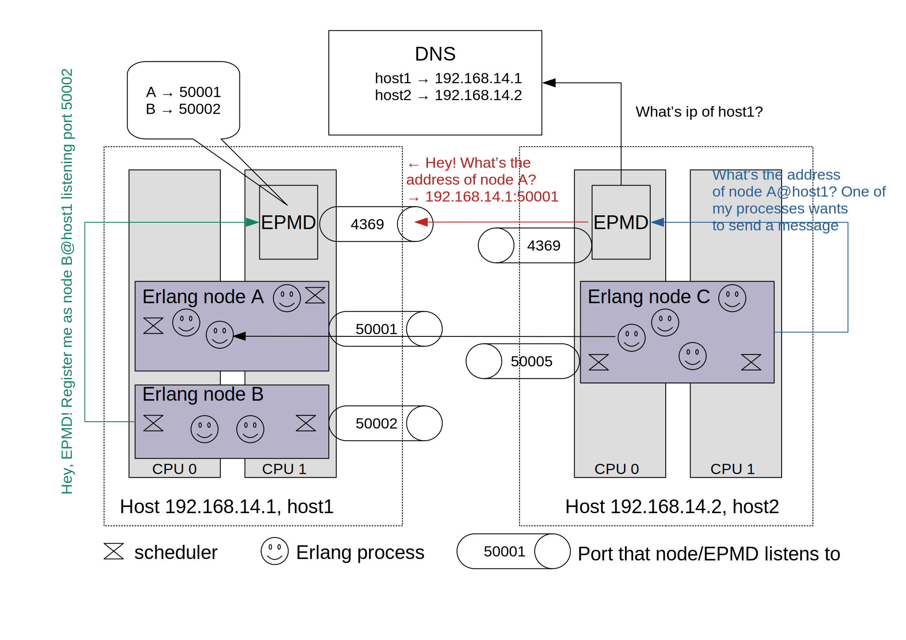

Battle-tested Erlang/OTP
Any sufficiently complicated concurrent program in another language contains an ad hoc informally-specified bug-ridden slow implementation of half of Erlang. Robert Virding, one of the creators of Erlang
Erlang still remains to be a unique fusion of practical engineering and clever architectural vision. Created in 1980s, it still has such a great potential to evolve in a modern web[^klarna]1.
We won’t dive in the language per se and pragmatic ideas of “let it fail”, supervision trees, and fault tolerance. You can read the very concise and full of practical wisdom thesis (highly recommended) of Joe Armstrong, one of the Erlang creators.
Let’s focus more on Erlang distribution capabilities. Erlang is compiled to run in a virtual machine called BEAM2. Elixir is also a BEAM-runnable language with interoperability with Erlang.
Erlang lightweight processes, while executing application logic, communicate with each other using signals. Most used signal type is a message3. Processes are scheduled for execution by BEAM. You can run millions of processes4. OTP is a collection of reusable components (abstractions for concurrent and distributed patterns such as client-server). So Erlang/OTP is a framework allowing you to quickly create complex concurrent and distributed systems.
BEAM (written in C) can be extended with dynamically loaded compiled modules with Native Implemented Functions (NIFs). So you can write this shared module in a language you prefer (supporting C interoperability, of course)5.
Erlang is primarily well suited for a massive IO-bound load so for CPU-bound tasks you should use, for example, above mentioned NIFs6.
Every node (Erlang VM) to form a cluster should share the same cookie file with a secret. It is rather a basic “security” with the aim to differentiate two or more clusters.
Every Erlang VM is started with a predefined name and then it’s enough to register the rest n-1 nodes on the first node. All nodes sharing the same cookie will propagate connections to each other creating a fully connected mesh network. This default transitive connection propagation can be configured – a node called hidden node without transitive connections can be used to create clusters with less connections7.
By default, communication between nodes of a cluster is done over TCP. Separate daemon process (called EPMD - Erlang Port Mapper Daemon) starts (if not already running) on every host machine with Erlang VMs. EPMD uses DNS to resolve node names to ip addresses and maps node names to ip+port (tcp socket). EPMD serves as a name resolver for nodes on the host machine.

You can also implement your own procedures for nodes discovery and discovery under container orchestrator.
Default Erlang distribution with cookies assumes trusted network so you should change default communication mechanism in case of untrusted network8. Moreover, large number of nodes with fully connected mesh communicating over large and uncontrolled network can be prohibitatively costly. This break point may range from 40 to 140 nodes9 depending on load and amount of global state required to sync over cluster (such as a process namespace or getting now time which requires global lock to provide monotonically increasing time over the cluster). In such cases federated10 clusters and partitioning of global state in separate groups of nodes inside a cluster is a way to go11.
Erlang is actively modernized and continuosly developed. So it’s a solid foundation for a distributed system.
Erlang lessons to go distributed:
- separation of concerns and modularity - you can configure your communication transport, algorithm of node discovery, network topology;
- distributed system must be observable (Erlang has excellent tracing and monitoring tools allowing to observe even specific Erlang processes);
- communication is asynchronous so no node has to wait any acknowledgement that its message was received by another one;
- message passing is location transparent (the code to send message to local Erlang process is the same as for sending to a process on another node in the cluster – at a cost of more RAM and time to
memcpyas every message is deeply copied); - maintaining global mutable data (namespace of lightweight processes in case of Erlang) and full connectivity severely limits scalability.
- fail-fast - correctness is more important than availability (of course, depends on the startup time). Erlang philosophy denies defensive programming (when you try to recover from all errors). So assertions in the production code are beneficial - they declare negative flow and don’t allow the distributed system (which is designed to be fault tolerant) to behave incorrectly12.
For example, Swedish fintech Klarna uses Erlang as it’s core platform handling 2 million transactions per day - look at their job descriptions.
At one of my work places I almost convinced my CTO to write IO-bound service for proxying media streams and unary requests in Erlang. For two weeks I read everything on Erlang and finally presented a workable version which was deployed to production. It had worked under production for about 3 weeks till the CTO had a look at the code. He was rather afraid of completely non-imperative style of code and inability to scale his Erlang team (consisted of only me). So he gently asked me to rewrite the app in Go. For those brave of you Adopting Erlang.
Alternative execution environments (including not only VMs) emerge periodically but I haven’t heard about any production-ready. BEAM is really complicated to reinvent. See also Lumen.
A lot of holy wars around considering Erlang as an actor language. See Stack Exchange question and Robert Virding’s email.
See Rustler
See also epmdless, Using TLS for Erlang Distribution
Federation is a technique to scale software by grouping its parts by feature. For example, you can federate database in separate servers: one for sessions, second for users, third for sales etc. Increased throughput comes with cost of joining data and holding transactions on the application side.
See Scaling Reliably: Improving the Scalability of the Erlang Distributed Actor Platform, Scaling Erlang Cluster to 10,000 Nodes, Stackoverflow question
See also Joran Dirk Greef TigerStyle! (Or How To Design Safer Systems in Less Time)